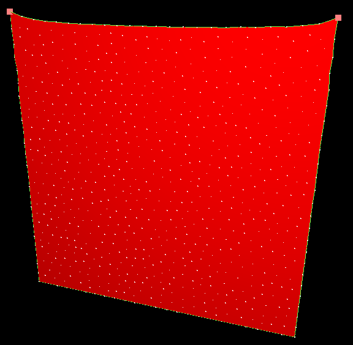

The aim of this tutorial is to show the interest of using a topological mapping between a 2D surface mesh and a 1D linear mesh. In this tutorial, a soft tissues is represented, implying:
- A mesh loader to read mesh file.
- A mechanicalObject with geometry point positions.
- A mass for gravity and fixed points.
- A FEM forcefield to create interactions between points
- An ODE scheme and a linear solver to solve the system at each time step.
- Dynamic topological components.
- A visual model which reproduces the current model geometry thanks to the identity mapping.
Key points
Under the first node representing the triangulation, a second node is used to represent the linear topology.
This second representation won't reproduce all edges of the triangulation, but only edges on the mesh borders. I.e edges with only one adjacent triangle.
They are represented in green in the simulation.
To create this mapping, the component
Triangle2EdgeTopologicalMapping is used. This component takes an input topology (Data Object1) which is the container of the "upper" topology (triangulation here) and has an output topology (Data Object2) which is the container of the above topology (edges here).
Results
In this simulation, both triangulation and edge mesh have spring forcefields to create interaction between points. Thus, when simulating, the soft tissue won't stretch.
Try to remove the
TriangularBendingSprings component. The result will be a tissue completely stretched.
Finally, try to remove the
MeshSringForceField component. The result will be a bad behavior of the mesh borders.

Additional results
When deleting triangles, the topological mapping is updated and so is the list of border edges.